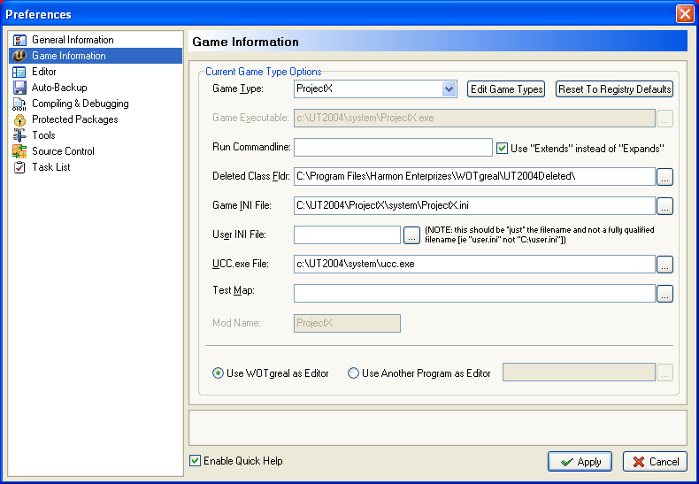
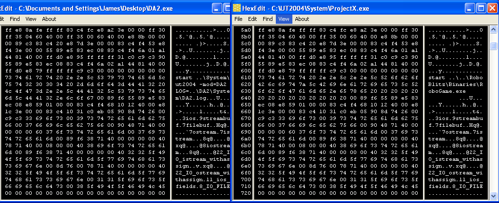
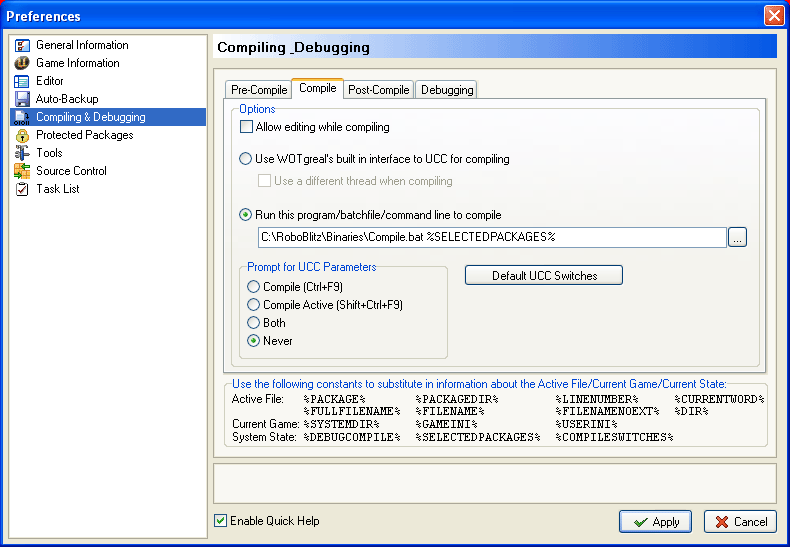

Solid Snake/UsingWOTGrealWithRoboBlitz
Using WOTGreal with RoboBlitz
Presumed knowledge
You'll have to read how to compile scripts by hand in Roboblitz. This information is available on their wiki. You'll also need to know how Unreal Engine 2.x compiles scripts too. It does require a bit of indepth knowledge, as I simply extrapolated from that. Lastly, you'll need to know the inner quirks of WOTGreal. I basically exploited WOTGreals customization properties to achieve this.
Directory setup
All of this works by using relative directories. So if your directories differ, you will need to change some of the files and code I've got up here. If you can't or don't want to do that, then you'll have to stick with the same directory lay out I have. UT2004 is stored in <%ROOT%>\UT2004 and RoboBlitz is stored in <%ROOT%>\RoboBlitz. I know people often put their games into a game directory, and thats fine, as the <%ROOT%> is the same. The directory layout only becomes a problem when its like <%ROOT%>\Games\UT2004 and <%ROOT%>\Steam\SteamApps\RoboBlitz, for example. This is only a hack to get things working somewhat. I needed to work around WOTGreal.
WOTGreal
First setup WOTGreal as if you are making your own mod type. This will make WOTGreal still put your packages in the package class and for it to be able to do the other many functions it does. From there, we need to change some things ...

This is the gametype setup screen. As you can see, I've only changed one thing, which is the exe the gametype launches. This exe is actually an executable I found in DA2. All the exe did was call UT2004 inside the DA2 directory. I used a hex editor to change the values into something I wanted. What I did is shown below, with before and after screenshots.

So as you can see I just used my favourite hex editor and just replaced the appropriate letters with what I want. So this is now an exe which calls RoboGame.exe relative to directory the exe sits in. So, when I click the 'Run' button in WOTGreal, it links to ProjectX.exe which then links RoboGame.exe ... effectively fixing that problem. The next problem is compiling.
The batch file
The essential problem is that the scripts sit in one directory, <%ROOT%>\UT2004\ProjectX\ and we want them in <%ROOT%>\RoboBlitz\Development\Src\. So the obvious answer is with a batch script! Luckily for us, WOTGreal allows us to run batch scripts to compile things. After a bit of hacking, this was the batch script I wrote.
00001 @ECHO OFF // Turn off echoing so we can print messages 00002 ECHO Preparing source code... // Hint that we are preparing the source code 00003 00004 SET MODNAME=ProjectX // Change this variable to change the name of mod directory 00005 00006 :loop // Action loop 00007 IF "%1"=="" GOTO end // If the current parameter is null, it means we have no more packages to consider 00008 GOTO action // Otherwise, there is a valid parameter (%1) so execute the block 00009 00010 :action 00011 IF EXIST "..\Development\Src\%1" rd ..\Development\Src\%1 /s /q // If the package directory exists in the development folder, remove it 00012 IF EXIST "..\RoboGame\Script\%1.u" del ..\RoboGame\Script\%1.u // If the compiled package exists, remove it. 00013 IF EXIST "..\..\UT2004\%ModName%\%1" xcopy ..\..\UT2004\%ModName%\%1 ..\Development\Src\%1\ /S /E // Copy over the source sitting in UT2004, into RoboBlitz 00014 IF EXIST "..\Development\Src\%1\" ECHO. // Add a space if the copy was successful 00015 SHIFT // Shift the parameters, discarding the current one (That is, %2 now is %1, %4 equals %3, etc) 00016 GOTO loop // Go back to the main loop 00017 00018 :end 00019 ECHO Preparing to compile source code... // Hint that we are now compiling 00020 RoboGame.exe // Run RoboGame.exe
The comments I have added are not in the script, but rather a brief description of whats going on. You will need to remove the comments for the batch to work probably. The last line says that I just run RoboGame.exe. Wouldn't this just run the game? In this case, no. It appears RoboBlitz checks to see if there are packages that need to be compiled. If so, it will prompt and ask you if you would like compile the newer scripts. {By the way, I do know of an update function in batch, but it was 7:11am when I wrote the original script, and I had only three hours sleep .. so I am sure you can forgive me. It essentially will do the same thing). If you want to, please write another version of the batch file which uses the UPDATE function instead.
Right, now we have the batch file. Lets setup WOTGreal to use it.

WOTGreal provided us with a fancy constant %SELECTEDPACKAGES%, so we parse that constant into the batch file (I tested the constant first before I wrote the batch file.. so it wasn't co-in-ke-dink that it just happens to work). Remember that when you 'compile' your not actually activating UCC anymore. So any flags you parse, will be parsed into the batch file (which acts as a precompiler). This doesn't bother me, as I don't need parse any flags. However for some of you, you may want to seperate the batch file, so one batch does the precompiling actions, with another doing the compile action. Anyways, hopefully with that, you can just click on compile and WOTGreal thus passes the package names over to the batch ... resulting in compiled packages for us in RoboBlitz.
So now .. you should be able to compile and run your own modded version of RoboBlitz. 
Happy modding!
Comments
Solid Snake: I did just finish writing this tutorial after work. So I'm rather tired. If there are any mistakes, or a missed step please ask here and I will try to fix/patch the document.